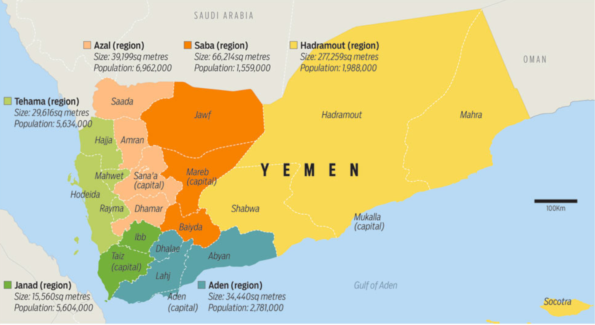

By: Suzanna Chen
While news about the COVID-19 pandemic, the vigorous socio-political movement against police brutality, and the warfare in Syria and Iraq are bombarding the rest of the world, a Middle Eastern country silently suffers from what the United Nations coined “the worst humanitarian crisis in the world”. Surrounded by wealthy and prosperous oil-producing giants of the Arab world, the Republic of Yemen – despite being equally abundant in natural resources (including oil) – fails to thrive as their neighbors have and instead falls into the realm of seemingly interminable warfare, uncontrollable outbreaks of disease, and devastating famines. How did this Middle Eastern nation – once the “heart of ancient Arabia” – fall into such an unstable state? Perhaps we can find the answers in the history of the nation's never-ceasing domestic and international warfare since its formation in 1990.
Background Information
Geography:
Photo: Map of Yemen with division between provinces and highlights of important cities Source: Khabar News Agency, Ministry of Planning and International Cooperation, Reuters. (Mar. 25, 2014)
Location: Yemen is a country in the Middle East region that sits on the southwestern tip of the Arabian Peninsula. The nation also owns two territories within its territorial waters; the volcanic island of Perim (or Mayuun) and the archipelago of Socotra.
Bordering Countries: Yemen shares a 1307 km (~812 miles) border with Saudi Arabia to the north, and a 294 km (~182 miles) border with Oman to the east.
Maritime Borders: The main territory of Yemen is surrounded by three bodies of water – the Gulf of Aden to the south, the Arabian Sea to the southeast, and the Red Sea to the west. The island of Perim (Mayuun) is located on the Strait of Mandeb at the entrance to the Red Sea, and the archipelago of Socotra sits on major shipping routes between the Guardafui Channel and the Arabian Sea.
Environment and Climate: Most of Yemen’s central and eastern territory comprises of hot and dry desert plains. Thus, the majority of Yemen’s population resides in the western region by the coast of the Red Sea, where the climate is more temperate. The coast is composed of a narrow strip of plains and large areas of rugged hills and mountains. Some of the nation's environmental concerns include limited freshwater supply year-round, overgrazing, soil erosion, deforestation, and the natural hazards of volcanic activities, sandstorms, and monsoons.
Important Sites
Sanaʽa is the largest city and the internationally recognized capital of Yemen. President Abd Rabbuh Mansur Hadi - of the official Yemeni government - briefly removed its status as the capital after he fled the city amidst the Yemeni coup d'état in 2015. As a result of the rebellion, the city is still controlled by the Houthi rebels as of June 2020.
Aden is a major port city and the temporary capital of Yemen after President Hadi escaped Sanaʽa in 2015. The city was the capital of South Yemen - or the People's Democratic Republic of Yemen - before the unification and formation of the current Yemen. It is the site of many conflicts of the current war, the most notable being the Battle of Aden, in which the Houthi rebels fought with President Hadi's forces - representing the Yemeni government - for the control of the city. The Saudi Arabian Army aided the governmental forces in driving out the Houthis, but they ultimately lost control of the city to another separatist force – the Southern Transitional Council (STC) – in 2018.
Sa‘dah (sometimes spelt “Sa‘ada”) is a city that sits high on the hot and dry mountains of northwestern Yemen. Being the site of the Houthi insurgents’ first revolt – the Battle of Sa‘dah – in 2011, the city is often seen as the Houthis’ “homeland”.
Relevant Terminology
Sunni (Sunnī in Arabic) is one of the two major branches of Islam, the other being Shiʿi. Sunni Muslims, referred to as Sunnis, make up the majority – 87 to 90 percent – of all adherents of the religion, and therefore often regard their denomination as the larger and mainstream branch of the religion. The central split in beliefs between the two branches occurs after the death of the Prophet Muhammad. The Sunnis recognize all of the first four caliphs as the Prophet Muhammad’s rightful successors, whereas the Shiʿah – adherents of Shiʿi Islam – believe otherwise. Countries with the greatest proportion of Sunnis include Saudi Arabia and Egypt.
Shiʿi (Shīʿī in Arabic), sometimes also referred to as Shiʿite, is the minority of the two major branches of Islam. In contrast to the Sunnis, who believe that all of the first four caliphs are rightful successors of the Prophet Muhammad, the Shiʿah or Shia – Shiʿi Muslims – firmly hold ʿAlī ibn Abī Ṭālib or ʿAlī, who was the cousin and son-in-law of the Prophet, as the sole successor. Countries of sizable Shiʿah populations include Iran and Bahrain.
Photo: Sunni and Shiʿah/Shia population
Source: waitbutwhy.com (Sept.12, 2014)
The Arab Spring is a series of related political uprisings in several Middle East countries – including Tunisia, Morocco, Syria, Libya, Egypt, and Bahrain – to call for pro-democracy changes in regimes. The event was sparked by the protest of a Tunisian street vendor, who set himself on fire in response to the arbitrary seizing of his vegetable stand by police over failure to obtain a permit in December of 2010. In the spring of the following year - hence the name of the movement - Tunisia became the first country to witness the series of political upheaval. However, despite the protests’ success in removing authoritarian rule in several countries, the political unrest also morphed into full-scale civil wars in countries like Syria and Yemen.
Key Parties
President Ali Abdullah SalehAli Abdullah Saleh was a member of the Yemeni political party General People’s Congress (GPC) and the president of Yemen from 1990 until February 2012, when he signed an agreement to transfer his position with Abdrabbuh Mansour Hadi – who was the then vice-president - in exchange for immunity from execution due to public outrage. Before becoming the head of state of the unified Yemen, Saleh served as the president of North Yemen – or the Yemen Arab Republic – since 1978. He had a military background and a history of leading a coup d’état against the imamate (a state ruled by an imam, an islamic leader position) of North Yemen and establishing a civilian government in 1962. By the time of his resignation, Saleh had already been in rule for 33 years. He famously compared his experience of ruling Yemen to “dancing on the heads of snakes”. After his presidency, he continued to be a political influencer and allied with the Houthi rebels, who later claimed his assassination on December 4, 2017.
Source: AFP/Agence France-Presse (Nov. 6, 2019)
Abdrabbuh Mansour Hadi is a member of the Yemeni political party GPC and the internationally recognized president of Yemen since February 2012. He also had a military background and occupied many field positions in the army before 1986, when the party he served – the Yemeni Socialist Party – lost the civil war in South Yemen. After the loss, Hadi followed the former South Yemeni president into exile in North Yemen, where he gained recognition in the new army. His military prominence remained when the two Yemeni states united in 1990. At the beginning of 1994, he was promoted as the Minister of Defence by President Saleh for his support during the first Yemeni civil war; and by the end of the same year, he further appointed to replace the former vice-president, who turned to fight against Saleh. In 2012, he was elected as the president of Yemen after Saleh’s resignation. However, he soon met his own rebellion forces. He fled from the capital city to Aden in 2015 - when the Houthis conquered the city - and ultimately went into exile in Saudi Arabia after the rebels reached his temporary haven in 2017. Due to the ongoing hostility against him, he spends most of his time in Saudi Arabia.
Photo: Yemeni President Hadi (right) with American Secretary of State John Kerry (left) in Riyadh, Saudi Arabia
Source: U.S. Department of State (May. 7, 2015)
The Houthis
The Houthis – more formally known as the Houthi movement or Ansar Allah (“Supporters of God”) – is a Yemeni political and armed movement that emerged from the city of Sa‘dah in the 1990s under the leadership of Zaidi – a minority branch under Shiʿi Islam – leader Hussein Badreddin al-Houthi. Their rebellion began with the opposition to President Saleh, whom they accused of marginalizing them and causing the country's high unemployment rate, economic decline, and governmental corruption. There had been numerous armed conflicts between the rebels and the Yemeni government forces under Saleh. The most notable revolt was during the Arab Spring in 2011, which ultimately contributed to Saleh’s resignation in the following year. Ironically, the Houthis joined forces with Saleh in 2014 to rebel against the current Yemeni leader, President Hadi. The allied forces took over Yemen’s capital city, Sanaʽa, which gave them the “upper-hand” in the civil war. As of June 2020, the Houthis still occupy the capital city and most populated areas in the country.
The Southern Transitional Council (STC)The Southern Transitional Council (STC) is a secessionist organization in southern Yemen with the goal of separating their part of the country from the rest of Yemen – as it was before the unification with North Yemen. The separatist force is led by the former governor of Aden, who grew resentment towards the Hadi government after the president dismissed him in 2017 due to close relations with the United Arab Emirates (UAE). In 2018, with the support of the UAE, the STC seized the nation’s temporary capital – Aden – in a coup d’état. Perhaps due to the increasingly complex conflicts of interests and casualties of civilians, the STC signed an agreement – the Riyadh Agreement – with the Hadi government in 2019 to end the power-struggle in southern Yemen. However, recent outbreaks of armed conflicts in the south make it doubtable whether the separatist force is determined to follow the Saudi-brokered agreement.
The Gulf Cooperation Council (GCC)The Gulf Cooperation Council (GCC) - currently known as the Cooperation Council for the Arab States of the Gulf - is an economic and political union between the governments of selective Arab countries surrounding the Persian Gulf, namely Bahrain, Kuwait, Oman, Qatar, Saudi Arabia, and the United Arab Emirates (UAE). The union’s main objective is to strengthen the bond between the Arab nations based on their similar political and cultural identities, and through this bond, achieve economic and military stability.
The History
Despite many sources claiming that Yemen’s political unrest began in 2015 when the Houthis took control of Sanaʽa and Saudi-led forces began to intervene – or 2011 when the Arab Spring movement catalyzed the current civil war – the truth is that the nation had never been stable since its establishment in 1990. In the following section, the 30 years of history, the present situation, and the future of Yemen are divided into six sections categorized by significant events.
The Uneasy Beginning: Unification of North and South Yemen (1990 – 1999)
May 22, 1990, marked the day North and South Yemen – the Yemen Arab Republic and the People’s Republic of South Yemen – united as the single nation of the Republic of Yemen. However, accompanying the merge was the uneased tension between the two territories, who had been periodically at war with each other since 1972. One of the differences between the two states was the population, with South Yemen comprised mostly of Sunnis and North Yemen majorly of Zaidi Shiʿah. The two former countries were also politically diverse, as North Yemen had a nationalist government at the time of the merge while South Yemen – although going through reforms – was a socialist state. Despite the disputes between the two Yemeni states that would foreshadow future conflicts, the unification had been relatively peaceful, as a unified parliament and constitution were formed and agreed upon. The joint Yemeni government consisted of Saleh – the former head of North Yemen – as the president and Ali Salim al-Beidh – the former leader of South Yemen – as the vice-president. North Yemen’s capital city, Sanaʽa, became the capital for the unified Yemen.
Photo: North and South Yemen before unifying in 1990
Source: Al Jazeera (Sept. 19, 2019)
However, in just one year after the nation’s establishment, Yemen had encountered its first international crisis. As a member of the United Nations Security Council (UNSC) for 1990 and 1991, the country voted against military intervention in Iraq and Kuwait during the Gulf War against the wishes of many Western and Arab countries – such as the U.S and Saudi Arabia. As a result, the international financial support for Yemen was cut, and neighbouring Saudi Arabia expelled around 800,000 Yemeni workers, leading the newly formed country into a sharp economic decline. It was also during this period of financial difficulty – with hunger and widespread unemployment – that opposition forces to the government began to emerge.
In 1994, as Saleh’s government failed to ease the increasingly dreadful economic crisis, vice-president al-Beidh – who was the president of former South Yemen – and many southern officials organized a rebellion in an attempt to gain independence for the south, despite only merging four years ago. Establishing the event as Yemen’s first civil war, President Salah declared a state of emergency and dismissed al-Beidh as the vice-president. In his place – as previously mentioned – was Hadi, the then Minister of Defense. The President and his new vice-president succeeded in vanquishing the separatist forces and resolving the crisis by the end of 1994. The southern succession forces are briefly put to rest.
Terrorists, Rebels, and Separatists (2000 - 2010)
In October of 2000, Yemen once again grabbed Western media’s headlines for a terrorist attack in the country with the U.S. as the target. USS Cole, one of the United States Navy’s guided missile destroyer was damaged during a suicide bombing attack claimed by the terrorist group al-Qaeda. Seventeen American nationals were killed and thirty-nine were injured, making the event the deadliest attack against a U.S. navy vessel since 1987.
The country was alarmed, and the government began to take action - although not after denying and putting off the attack as "an accident" until U.S. investigation revealed otherwise. However, no significant progress nor response had been made for over a year, further decreasing Saleh’s credibility and popularity among the citizens. Even his more notable actions, such as expelling more than a hundred foreign Islamic clerics in February 2002, had no impact on the worsening of terrorism in the area. In fact, merely eight months after the expulsion, al-Qaeda launched another attack, killing one and injuring twelve crew members on the oil supertanker MV Limburg in the Port of Aden.
A year before the end of the decade, branches of the terrorist group in Saudi Arabia and Yemen merged to form the collective branch called al-Qaeda in the Arabian Peninsula (AQAP). The AQAP would be responsible for many notorious attacks in the future, which gave the group widespread recognition as the most dangerous branch of al-Qaeda.
Photo: USS Cole after the 2000 al-Qaeda attack
Source: CNN (Feb. 20, 2020)
In addition to combating the terrorist threats, the Yemeni government was simultaneously facing a new opposition force emerging from the northern mountains of the country. From June to September of 2004, the Houthis – a rebel group of Zaidi Shiʿi minorities – sparks up conflict with government forces when attempts have been made to arrest their leader, Hussein Badreddin al-Houthi. Despite the rebellion’s presence since the 1990s, no armed conflicts have occurred until President Saleh has accused the group of trying to overthrow the government and the republican system to implement Zaidi religious law in 2004. The Houthis, in response, have claimed that their actions are merely self-defense against governmental discrimination on their minority population. Neither party has managed to claim their cases and instead fall into months of brutal combat.
The insurgency has already been disastrous – with hundreds of civilian deaths amid the initial conflicts – but the assassination of the Houthi leader on September 10 only fueled the rebels’ anger further. After losing their leader, the group continued to engage in intermittent armed clashes with government forces – notably the fight in March 2005, in which two hundred civilians were killed within the month. The periodic combats would continue until 2010 when the movements in demand for the president’s resignation began to build momentum. By this brief period of ceasefire, as many as 80,000 Yemeni civilians were displaced within the country.
Meanwhile, frustration towards the nation’s unification rekindled in the south, only to be fueled further when the government launched an offensive against the separatists in late 2010.
Hope, Disappointment, and Unceasing Rebellion (2011 - 2014)
In the spring of 2011, the wave of pro-democracy uprisings against authoritarian governments - known as the Arab Spring in retrospect - swept through numerous North African and Middle Eastern countries. Although the Yemeni version of the movement is lesser-known, it had a significant and long-lasting impact on the country’s political and societal landscape. Similar to the ones of Tunisians and Egyptians, the Yemeni demonstrations started in January of the year with public rallies voicing the people’s complaints about the poor economic condition, high unemployment rate, unsettled military unrest, and the marginalization of minority groups under Saleh's corrupted government. By March, the increased conflicts between the government and the civilian, rebel, and separatist forces urged the protesters to harden their demands for Saleh’s immediate resignation. They had achieved this - after a few failed attempts at negotiation and a successful physical attack on Saleh - in November of 2011. The resignation of the president and the transfer of his power to Hadi - the then vice-president - had been overseen and brokered by both members of the Gulf Cooperation Council (GCC) and the UN to prevent last-minute refusal and disrespect for the agreements.
Photo: Saleh (right) handing over the Yemeni flag – symbolizing his presidential power – to Hadi (left)
Source: Hani Mohammed of the Associated Press/AP (Feb. 27, 2012)
The Yemeni people had officially elected Hadi as the president in February of 2012. Although, it was unclear whether he gained genuine public support as he won as the sole candidate in an election that was boycotted by both the Houthis in the north and the secessionists in the south.
Following the initiatives proposed by the GCC, the new president launched a National Dialogue Conference (NDC) in March 2013 to discuss major Yemeni constitutional, political, and social issues. The conference concluded in the following year with Hadi promising to take actions - such as constitutional drafting and holding a constitutional referendum - towards transitioning into a more democratic government.
However, the proposed reforms failed to address many of the country’s core problems. For example, the threat of terrorism had been growing - with two significantly destructive suicide attacks in one year - without constructive and effective actions from the Hadi government. Many Yemenis were once hopeful for the change but began to show growing disappointment at the lack of improvement. Among these people, the Houthis - who remained peaceful until 2014 - grew increasingly resentful for the lack of motion addressing their grievances. They retook the streets and began another rebellion towards the newly-established government. However, this time, their revolt was joined by forces loyal to Saleh - the Houthis’ once sworn enemies - who saw this as the opportunity to return the former president to power. Together, they fought against the federal military and conquered the capital city - Sanaʽa - in September 2014, forcing President Hadi to escape and move his government headquarters to Aden, a major southern port city. The presidential panel attempted to draft several amendments to accommodate some of the rebels' demands, but the offers were rejected and the Yemeni civil war began in full force.
Photo: Map of Yemen showing the Houthi-Saleh alliance (in orange) conquering the capital city
Source: Global Security (Apr. 25, 2020)
International Involvement and Proxy War (2015 - 2016)
After the invasion of Sanaʽa, the Houthis and forces of Saleh continued to push south towards President Hadi’s temporary base at Aden. They arrived at the port city and took control of the airport and the presidential headquarters in February 2015, forcing the president to flee to neighbouring Oman then ultimately to Saudi Arabia. The war soon developed into a complex international crossfire.
Despite the casualty rate quickly increasing since the beginning of the war in 2014, it did not drastically spike into an alarming amount until Saudi Arabia interfered with nine other predominantly Muslim countries. The media often refer to this party as the “Saudi-led coalition”. The coalition began its campaign of relentless airstrikes in 2015 - after being defeated by the rebels on land due to unfamiliarity with the landscape. Despite the nation claiming to be aiming at military targets, the UN estimated that one-third of the aerial attacks were aimed at civilian gatherings places and infrastructures - including hospitals, schools, and even a funeral. Moreover, the international alliance also set up land, sea, and sky blockades to prevent military supplies from entering the country and getting into the rebels’ hands. However, in doing so, it had also blocked humanitarian aid from reaching the Yemeni civilians, who were desperately in need.
Many might wonder, why is Saudi Arabia fighting so vigorously in this domestic warfare? In response, according to Elizabeth Kendall - senior researcher at the University of Oxford - Saudi Arabia has expressed three central war aims.
First, the nation wanted to restore President Hadi's power. Doing so would be for the Saudis' best interests as they would be more at ease with Yemen being under the control of a centralized government.
Second, the country strived to protect the southern border it shares with Yemen and prevent the rebels from controlling Bab-el-Mandeb Strait - one of the most important shipping routes of oil in the world that lies between the southwestern tip of Yemen and the African nations of Eritrea and Djibouti
Lastly, and most importantly, the Arab state wanted to contain the perceived growing influence of Iran in the region. The Saudis’ fear of Iran gaining power in the region is understandable, as the two nations had been long-time rivals due to many reasons, including Iran being the most significant Shiʿi power in the region and Saudi Arabia being majorly Sunni. However, why is Iran related to the war? Despite denying the accusations of direct military aid, Iran had proclaimed its public support for the Houthis, and there was evidence that the weapons used by the rebels were Iranian-produced.
The situation is the prototypal example of proxy war - where two countries - in this case, Iran and Saudi Arabia - support opposing sides in a foreign war. It could almost be perceived that the two countries are at war without declaring one with each other.
Photo: Saudi Arabia (represented by Crown Prince Mohammed bin Salman; left) and Iran (represted by President Hassan Rouhani; right) fighting a proxy war in Yemen (centre)
Source: Getty Images (Dec. 9, 2017)
Regardless of the truth about military involvement, the mere presence of Iran immensely complicated the situation. Many western countries - namely the U.S., the U.K., and France - became active in the war due to their friendly economic relationships with Saudi Arabia and rivalries - chiefly the U.S. - with Iran. These western governments provided the Saudis with logistical and military support during the mission to restore the Yemeni government.
As a result, the civil war in Yemen had evolved into a full international dispute by 2016 - with the U.S., the U.K., France, and Saudi-led coalition backing the Hadi government, and Iran backing the Houthi rebel forces.
Growing Complexity and Alliance Disputes (2017 - 2019)
In December 2017, former president Saleh shocked the world by breaking his alliance on TV and saying that he was willing to negotiate a solution with the Saudi-led coalition. To many Yemenis, Saleh was the one and only president they had ever known; struggling under the Houthis' rule, they had been desperately waiting for Saleh to take a stand towards mediation. However, the moment they dreamt of did not materialize. Merely two days after switching sides, Saleh was assassinated just outside of the capital city. The Houthis soon claimed his death.
Taking away the only hope for reconciliation, the Houthis were now the target for both the forces loyal to Saleh and the Saudi-led coalition. However, perhaps due to their familiarity with the battlefields and the support from Iran, the Yemeni government and Saudi-led coalition had only managed to reclaim parts of the Houthis' territory in the south. By the end of 2019, the Houthis still occupy a large portion of the western region, which is the most populous.
Meanwhile, another alliance - in addition to the Houthi-Saleh union - had begun to show cracks. Despite its name, the Saudi-led coalition was chiefly organized by both Saudi Arabia and the United Arab Emirates (UAE). The two nations took responsibility for battles in different parts of Yemen - Saudis in the north and the Emirates in the south. While everyone expected them to be working towards the same goal, the UAE shockingly declared its support of the Southern Transitional Council (STC) - a southern separatist group - in 2017. Many suspect that the newly-formed alliance was based on the reasons that the UAE developed friendly relations with people of the south after four three years of collaboration, and that the Emirates value the STC because they are good fighters against terrorist organizations like the AQAP and the rising power of the Islamic State. Also, President Hadi had been in exile in Saudi Arabia for an extended period of time, causing him to lose contact and support from the locals in the south - specifically Aden, where his government is based. All of the above contributed to the seemingly effortless conquest of Aden by the UAE-backed STC in 2018.
At this point in the war, the civilian deaths had reached an amount too horrendous to be ignored. The airstrikes administered by the Saudi-led coalitions began to receive international criticism, as the damages they caused were so significant and detrimental that the UN had categorized the aerial attacks as war crimes. Being the leading supplier of aerial weapons to the Saudis, the U.S. entered a realm of internal debates regarding the true nature of its involvement in the war. Many Americans took the streets to demand an exit to the war when the scandal of Saudi Crown Prince Mohammed bin Salman and the murder of the journalist Jamal Khashoggi broke out. Moreover, officials acknowledged the alarming trend of Yemeni youths joining extremist groups in retaliation to the U.S.’s involvement in the destruction of their county. However, as President Trump - against the dismay of most Americans - vetoes the Senate's bill to end the U.S’s military support in Yemen in 2019, there is little prospect of an end to the chaotic war and the mass civilian suffering.
Photo: President Donald Trump vetoes measures to end U.S. involvement in Yemen
Source: Evan Vucci of the Associated Press/AP (Apr. 17, 2019)
Present and Future (2020 - Future)
The current situation in Yemen is dire, to say the least. Neither of the two major opposition parties – the Iran-supported Houthis and the Saudi-backed Yemeni governmental forces – show any signs of willingness to negotiate. The constant disruptions caused by terrorist groups - including ISIS and the world’s most dangerous branch of al-Qaeda - as well as more than twenty national secessionist forces only complicate matters further.
Photo: Map of Yemen showing controlled districts of major opposition groups within the war as of March 25, 2020
Source: Koopinator on YouTube (Mar. 25, 2020)
Meanwhile, Yemeni civilians – whose casualties are estimated to be at least 100,000 since 2015 – are struggling to survive.
The United Nations summarized the crisis in 2020 with the characteristics of “widespread poverty, conflict, poor governance and weak rule of law, including widely reported human rights violations”. Unfortunately, the international humanitarian assistance – which an estimated 24.1 million civilians, or two-thirds of the population, depends on for survival – continues to be used by the Saudi-led coalition as a tactic in war, despite the UN’s repetitive condemnation. Moreover, with the newest challenge brought forth by the COVID-19 pandemic, the desperately needed medical aids and emergency supplies shorten further as the global focus shifts away from the crumbling nation.
The United Nations states that ending the war would be the only solution to this growing crisis. However, the war in Yemen consists of multiple oppositions of numerous international and national parties. To put an end to the war – or at least the foreign intervention in the civil war – would not be easy, as demonstrated by the multiple failed attempts at negotiation, but it can be achieved if the more stable and powerful countries – such as the U.S. – can take the initiative and actions.
On the positive side, with the recent increase of international attention, experts discover sparks of hope within the war-torn nation.
“If you give the young people...the women...and the non-elites a chance to be part of the process to develop a solution for Yemen, there is hope, because they are brilliant, smart people. They just have been left out of the whole process and discussion.”, said Director Muhammedally of the Middle East and South Asia Center for Civilians in Conflict.
Henrietta Fore, the executive director of the United Nations International Children’s Emergency Fund (UNICEF), also saw hope after interacting with Yemeni children in UN-protected areas. “Many of these children have seen so much dying, but if we can get them to these safe places, they begin to have psychosocial support...and begin to put some of those memories into a place that they can deal with it and live with it.”, she said after her visit.
Ever since the beginning of the nation, the civilians had too often been suffering and ignored. Yemen is known throughout the Middle East as "Yemen al-sa'id", which means “happy Yemen” or “optimistic Yemen”, according to Rabyaah Althaibani, the founder of the Arab Women’s Voice.
The battle between international and national forces hangs tens of millions of Yemeni civilians’ lives on a thread. They crave for a solution, for stability, and for peace.
Yet, their future depends partially on our governments and us. Will we, as outsiders to this catastrophic humanitarian crisis, help them achieve a future of happiness and optimism?
Photo: Yemeni children smiling through their pain
Source: Art Chartier (Mar. 11, 2013)
References
Gaur, Aakanksha, et al. “Sunni Islam.” Encyclopaedia Britannica. 4. Oct. 2019. Web. 28. June. 2020.
Giovetti, Olivia. “5 OF THE WORST HUMANITARIAN CRISES — AND HOW WE’RE HELPING.” Concern Worldwide USA. 27. Sept. 2019. Web. 26. June. 2020.
King, MacDara, et al. “Yemen: A History of Conflict - Narrated by David Strathairn - Full Episode.” YouTube. Uploaded by Foreign Policy Association. 2. Mar. 2020. Web. 25. June. 2020.
Koopinator. “The Yemeni Civil War: Every Day (Feb 2014 - March 2020).” YouTube. Uploaded by Koopinator. 25. Mar. 2020. Web. 29. June. 2020.
Licciardello, Chas. “The war in Yemen explained | Planet America.” YouTube. Uploaded by ABC News In-Depth. 27. Mar. 2017. Web. 25. June. 2020.
McKernan, Bethan. “Socotra is Finally Dragged into Yemen's Civil War, Ripping Apart the Island's Way of Life.” The Independent. 9. May. 2018. Web. 25. June. 2020. https://www.independent.co.uk/news/world/middle-east/ socotra-yemen-civil-war-uae-miltary-base-island-life-emirates-a8342621.html
“MIDDLE EAST :: YEMEN.” The Central Intelligence Agency (CIA) – The World Factbook. 11. June. 2020. Web. 25. June. 2020.
Mullen, Matt, et al. “Arab Spring.” History. 17. Jan. 2020. Web. 28. June. 2020.
Newman, Andrew J. “Shiʿi Islam.” Encyclopaedia Britannica. 28. Jan. 2020. Web. 28. June. 2020.
Noman, Mai. “Ali Abdullah Saleh: Why His Death is a Big Deal for Yemen - BBC News.” YouTube. Uploaded by BBC News. 5. Dec. 2017. Web. 27. June. 2020.
“Sanaa.” Wikipedia: The Free Encyclopedia. 27. June. 2020. Web. 27. June. 2020.
“Southern Transitional Council (STC).” Wikipedia: The Free Encyclopedia. 21. June. 2020. Web. 28. June. 2020.
Stone, Richard. “Yemen was Facing the World’s Worst Humanitarian Crisis. Then the Coronavirus Hit.” American Association for the Advancement of Science (AAAS). 28. May. 2020. Web. 26. June. 2020.
“Sunnis and Shia in the Middle East.” British Broadcasting Corporation (BBC) News. 19. Dec. 2013. Web. 28. June. 2020.
Tesch, Noah, et al. “Ali Abdullah Saleh – President of Yemen.” Encyclopaedia Britannica. 17. Mar. 2020. Web. 27. June. 2020.
“The Middle East’s Cold War, Explained” YouTube. Uploaded by Vox. 17. July. 2017. Web. 28. June. 2020.
“The US May be Aiding War Crimes in Yemen.” YouTube. Uploaded by Vox. 12. Dec. 2016. Web. 26. June. 2020.
“Yemen.” Wikipedia: The Free Encyclopedia. 25. June. 2020. Web. 25. June. 2020.
“Yemen Arab Republic.” Wikipedia: The Free Encyclopedia. 25. May. 2020. Web. 28. June. 2020.
“Yemen Country Profile.” The British Broadcasting Corporation (BBC) News. 18. Feb. 2019. Web. 25. June. 2020.
“Yemen’s Complicated War Explained.” YouTube. Uploaded by TRT World. 10. Aug. 2018. Web. 26. June. 2020.
“Yemen - Summary of 28 Years of History.” YouTube. Uploaded by Geo History. 19. July. 2018. Web. 25. June. 2020.
Zeidan, Adam, et al. “Gulf Cooperation Council - International Organization.” Encyclopaedia Britannica. 18. May. 2020. Web. 28. June. 2020.